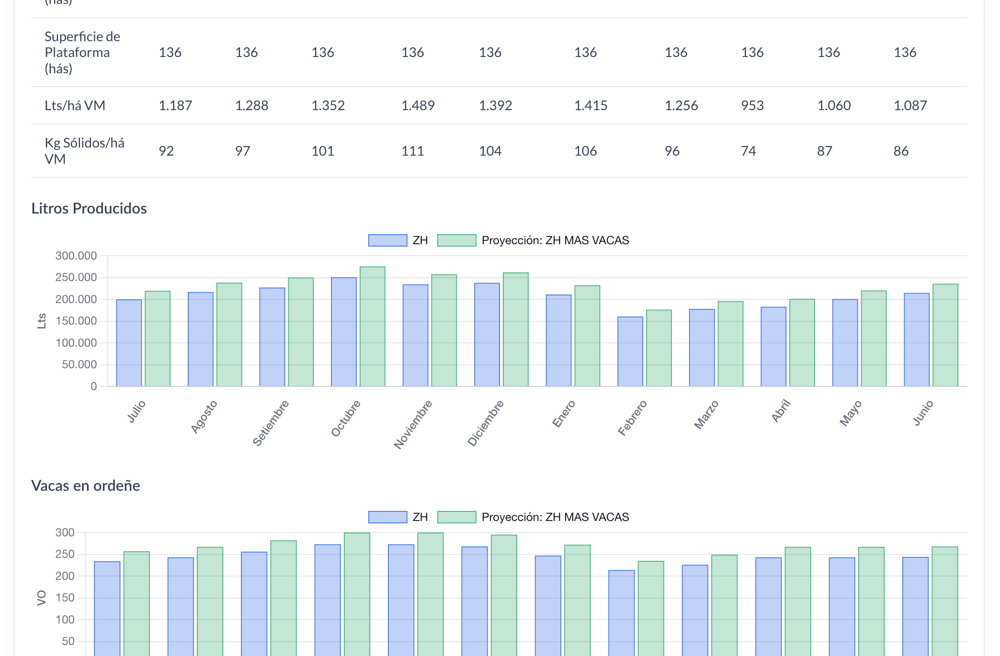

GlobalUY · INALE
Módulo de planificación INALE
Módulo interno de planificación y predicción agrícola para INALE: planifica la dieta, las pasturas y las reservas de un tambo a lo largo del año, con un solver que busca el menor costo.

Trabajo en este módulo en GlobalUY para INALE (Instituto Nacional de la Leche). Es una herramienta interna de planificación y predicción agrícola que se usa para organizar la dieta y el uso de pasturas y reservas de un tambo a lo largo del año.
Un solver busca el menor costo sin dejar de cumplir los requerimientos nutricionales. El producto se divide en dos flujos de planificación:
VM (Vaca Masa) es el plan para el rodeo adulto en producción (en ordeñe), expresado por hectárea de vaca masa.
Recría aplica el mismo enfoque a los animales en crecimiento: lotes, ganancia de peso y sus propios requerimientos nutricionales, en un flujo separado.